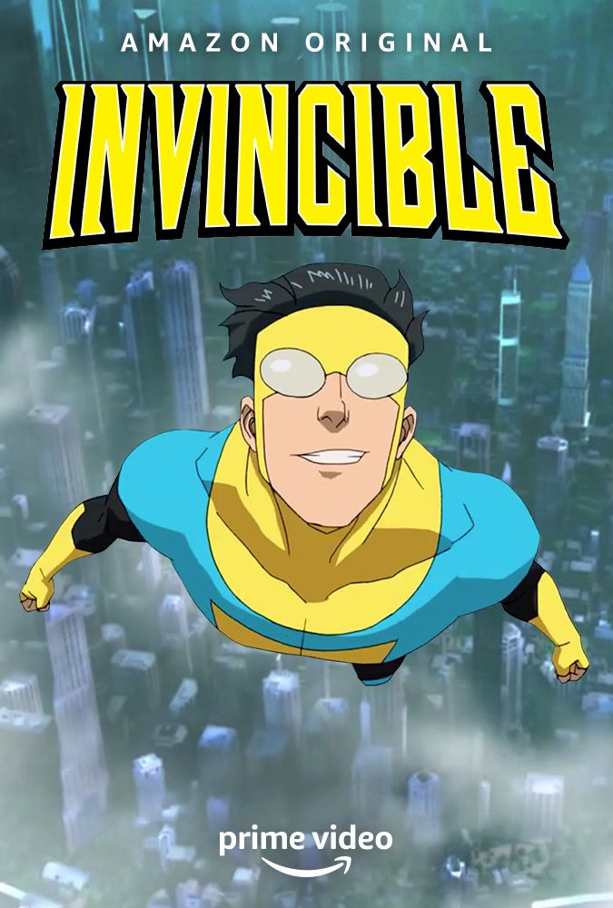
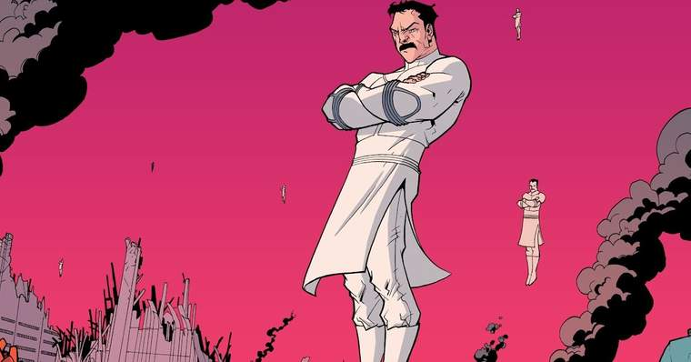
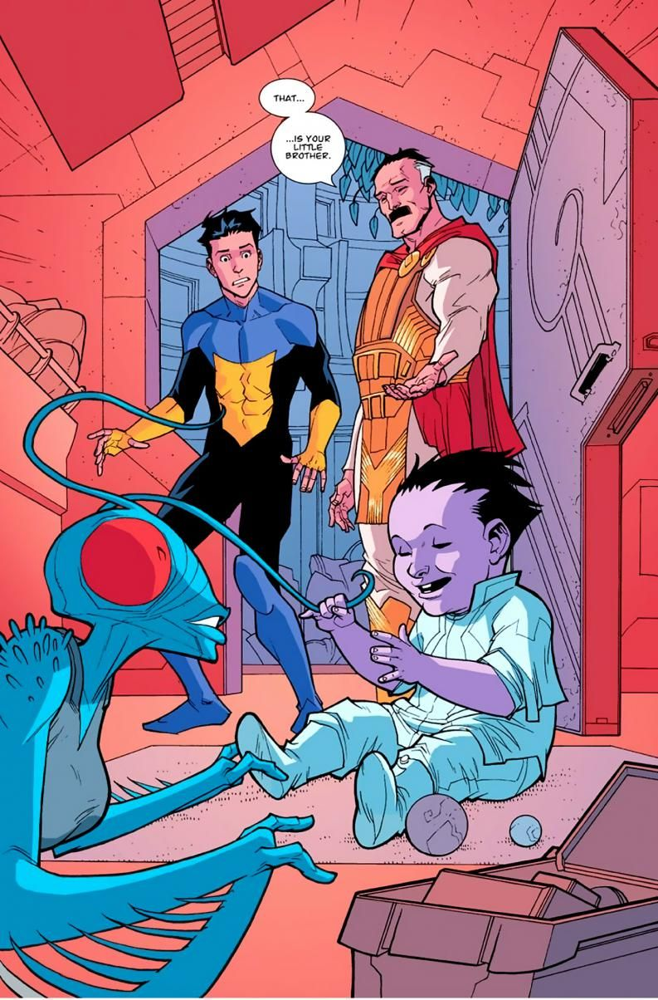
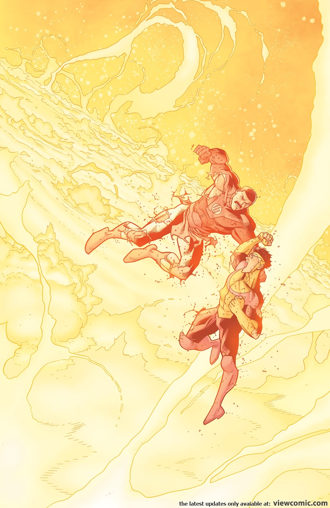
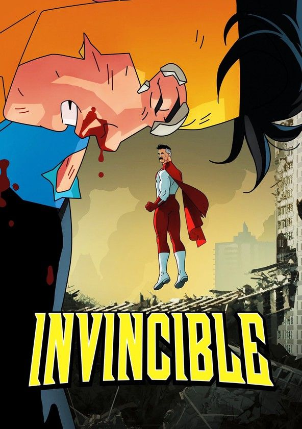

INVENCÍVEL
Mark Grayson, o filho meio-humano de uma mulher comum da Terra chamada Deborah e um alienígena chamado Nolan, um homem que o mundo conhece como o super-herói Omni-Man. Mark Grayson é apenas um adolescente americano comum. Ele é um fã de quadrinhos tentando sobreviver ao ensino médio e fazer a garota dos seus sonhos notá-lo. Só que um detalhezinho importante sobre Mark é que ele é filho do Omni-Man, um dos super-heróis mais poderosos e amados do mundo. Quando as próprias habilidades super-humanas de Mark começam a se revelar, ele não demora em assumir a alcunha de Invencível para seguir os passos de seu pai em um carreira super-heroica.
VILTRUMITAS(sem spoiler)
Para entender de um pouco mais sobre o Invencível, temos que falar sobre o povo de origem do seu pai, os viltrumitas são uma raça alienígena altruísta de um planeta distante, que envia missionários super poderosos para proteger cada planeta de ameaças externas.
Poderes e Habilidades
Podemos dizer que os Viltrumitas são uma raça quase perfeita, eles demoram mais para envelhecer, por conta de seu fator de cura acelerado(não chega a ser instantaneo igual o fator de cura do Wolverine, mas mesmo assim é muito rápido) eles podem viver milhares de anos. Até no gene eles são dominantes, já que quando um viltrumita tem um filho com um ser de alguma outra espécie, esse mestiço é quase que um viltrumita puro, temos o Invencível como exemplo, esses mestiços tem apenas algumas diferenças dos viltrumitas puros, o Invencível tem todos conceitos de um Humano, sobre ética, moral, compaixão e amor, só que em um corpo viltrumita, as mudanças de um mestiço varia conforme a raça que o viltrumita for se relacionar, mas não são mudanças gigantes, pois são praticamente 100% viltrumitas, um outro exemplo é o irmão do Invencível, que até agora apareceu somente nos quadrinhos, as mudanças dele é que ele cresceu muito mais rápido que o Invencível e possui pele roxa, de resto, segue como um viltrumita quase puro.
+ PODERES
Os viltrumitas, alem do que foi citado acima, eles também possuem super força, pele praticamente indestrutível e podem voar(podem voar muito rapido quando experiente), eles são tão resistentes que em um arco dos quadrinhos, vemos o Invencível lutando contra outro viltrumita proximo ao Sol.
CONCLUSÃO SOBRE O INVENCÍVEL
Mark Grayson pode ter apenas apanhado na primeira temporada, mas acredite, o garoto ainda tem muito potencial. Como um híbrido entre viltrumita e humano, ele combina poder e empatia se tornando um dos maiores heróis de todo o multiverso. Além de possuir super força, pele praticamente indestrutível, o poder de voar e todo o resto que um viltrumita pode fazer, ele provou ser capaz de liderar grupos bastante heterogêneos de heróis, usando suas habilidades únicas para combater o poder bruto do Império de seu povo. Também derrotou muitos vilões que, em teoria, seriam mais fortes do que ele, então sua força não deve ser subestimada.
